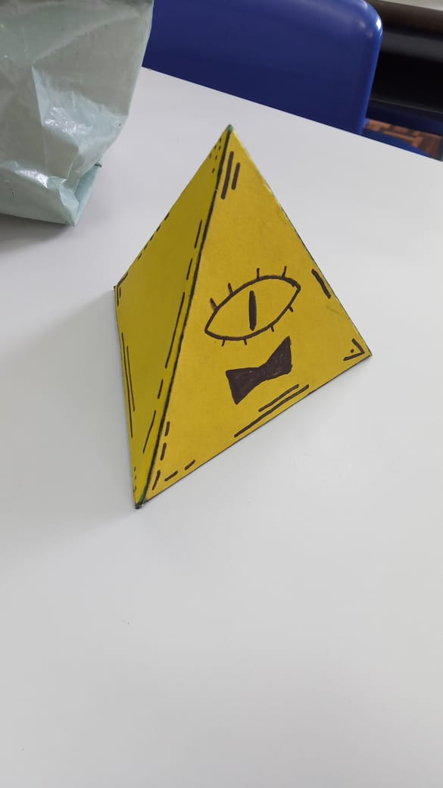
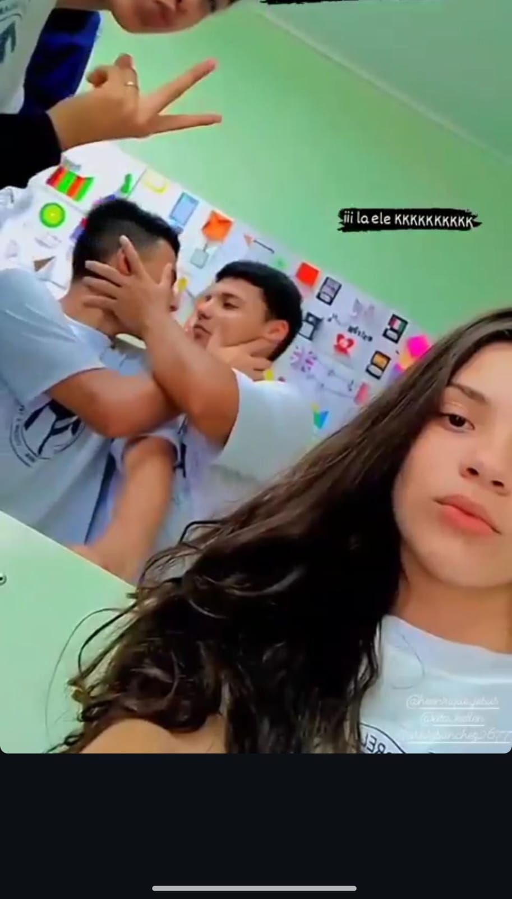

Minha História no Ensino Médio
Comecei a estudar no Colégio Estadual Padre Claudio Morelli em 2022, um ano desafiador, onde me adaptei com dificuldades a uma nova escola e conheci novas pessoas. Em 2023, já familiarizado e com novas amizades, comecei a criar lembranças reais. Tirei fotos com amigos que ficaram eternizadas não apenas em imagens, mas profundamente dentro de mim.

Uma das poucas fotos em grupo que tenho salva, felizmente ela está entre elas.

Apesar de metade da minha cabeça ter ficado pra fora da foto eu gosto dela. (Podia ser pior, tem um otário ali que nem na foto tá e mesmo assim tá posando pra foto KKKKKK)

Dentre estas 3 fotos, essa é a mais especial para mim, pois nela, meu amigo João está me mostrando o tamanho do seu afeto por mim.
Apesar de todas as piadas e gracinhas que escrevi anteriormente, é realmente muito bom passar os dias com essa galera. Tem muita gente que eu não coloquei foto aqui porque são uns tatu que não tiram fotos, mas são incríveis. Não tenho registro, mas um grande feito deste ano também foi aprender a jogar truco, TMJ.

Foto com o cria enquanto andamos no inferno de 30 graus rumo a nossas casas depois da aula do gargamel.

Novamente o João mostrando o quanto ele me ama.

Uma foto que tirei do rabo.

Assistindo jogo durante a aula com os cria.

Outra foto aleatória em um grupo que o João me arrastou pra tirar essa foto.

O dia em que eu perdi o medo e decidi me declarar para todos, beijei meu melhor amigo e parei de fingir ser algo que não sou!üè≥Ô∏è‚Äçüåàüè≥Ô∏è‚Äçüåàüè≥Ô∏è‚Äçüåàüè≥Ô∏è‚Äçüåà